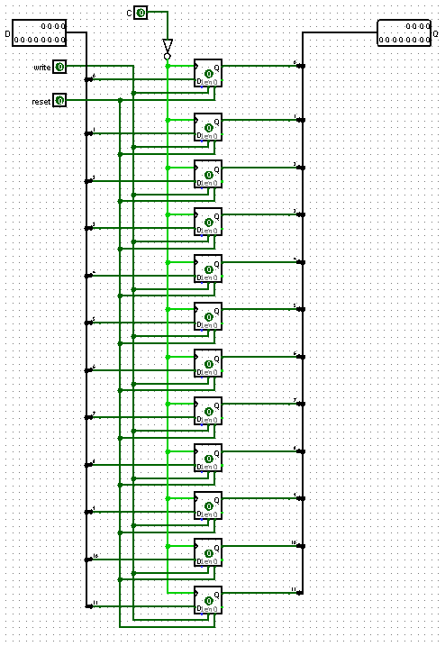
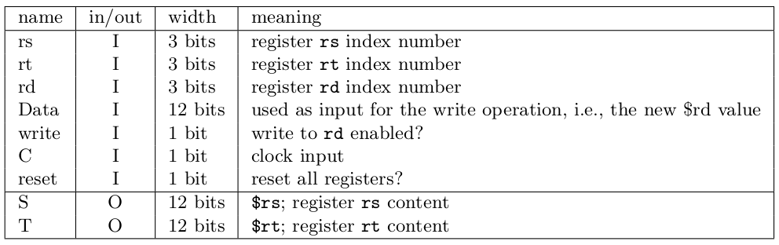

Verslag 4: Registers
Dit verslag werd opgesteld door:
- Naam: Laurens De Wachter
Studentennummer: s0214686
Email adres: laurens.dewachter@student.uantwerpen.be
- Naam: Simon Olivier
Studentennummer: s0211074
Email adres: simon.olivier@student.uantwerpen.be
Aantal man-uren besteed: 2 uur
Moeilijkheidsgraad: 5/10 (1 is heel makkelijk, 10 is heel moeilijk)
Inhoud van de oplossing
De oplossing bestaat uit de volgend bestand:
Verslag
In dit project wordt eerst een 12-bit register ontworpen om deze daarna te gebruiken in een register file. Deze register file zal 8 registers bevatten. Nadien wordt een counter
en een fintite-state machine ontworpen.
12-bit register
Een register wordt opgebouwd uit 12 D flip-flops die updaten op de falling edge van de klok. De inputs bestaan uit
- "D" (12 bits): bevat de input data
- "Reset" (1 bit): zet de inhoud van het register op 000000000000
- "Write" (1 bit): als write 1 is wordt de inhoud van D in het register geschreven
- "C" (1 bit): de klok
Het register heeft slechts één output "Q" die de inhoud van het register bevat. Het register ziet er dan als volgt uit.

Register file
De register file maakt gebruik van 8 12-bit registers. De I/O van dit circuit bestaat uit 7 inputs en 2 outputs.
